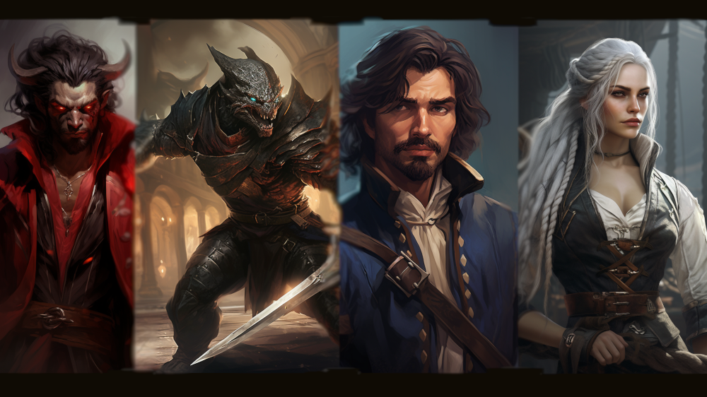
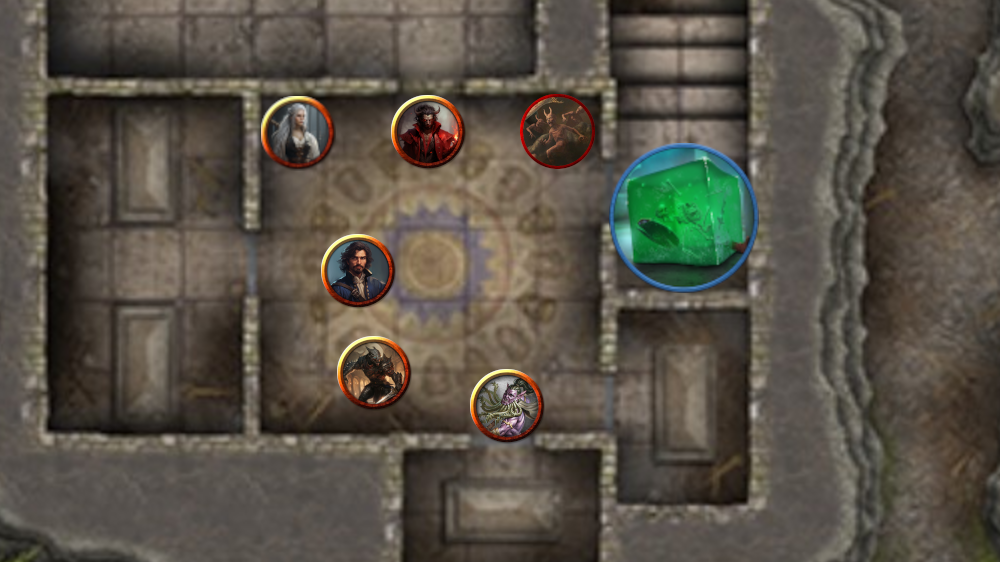
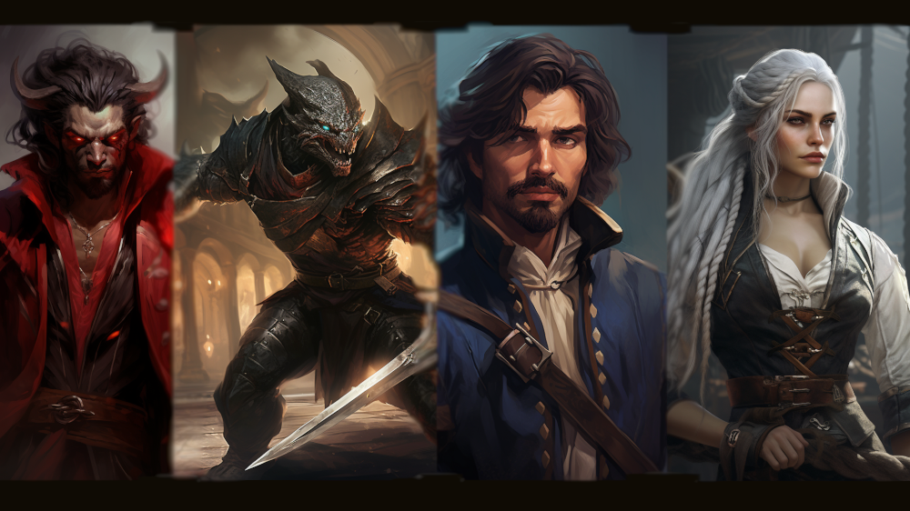
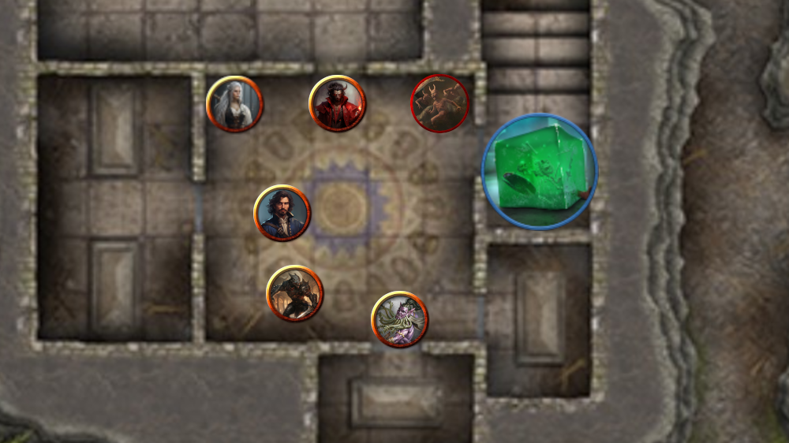

Fight the Tyranny of Dragons
The Brookside Exploration Society, a group of adventurers, is about to embark on the climactic conclusion of their epic quest to put an end to the menacing threat of Tiamat and the Cult of the Dragon. This thrilling adventure unfolds in the form of a live play tabletop role-playing game (TTRPG) stream, promising an exciting and entertaining experience for all viewers.
Whether you're a novice or a seasoned veteran in the world of TTRPGs, this stream welcomes everyone. It's an opportunity to witness the culmination of years of storytelling and gameplay as the Brookside Exploration Society faces their greatest challenge yet. The fate of the world hangs in the balance as they strive to foil the plans of Severin and the cult, who are on the verge of summoning Tiamat, the five-headed dragon of immense power.
As the story unfolds, you'll have a front-row seat to the heroes' journey. The players, guided by a skilled game master, will employ their unique abilities, strategic thinking, and teamwork to thwart the cult's sinister plans. Expect epic battles, tense encounters, and gripping narrative moments as they race against time to prevent the onset of the dreaded Tyranny of Dragons.
The live play format brings an interactive and immersive experience to the audience. You'll witness the players' decision-making, dice rolls, and the unfolding consequences of their actions. Engage with the stream through chat, where you can share your thoughts, root for your favorite characters, and join fellow fans in the excitement of this thrilling adventure.
The Brookside Exploration Society's finale promises not only an enthralling story but also a celebration of the TTRPG community. It's a testament to the power of collaborative storytelling and the bonds forged at the gaming table. Whether you're seeking thrilling entertainment, inspiration for your own TTRPG campaigns, or simply the joy of shared adventures, this live play stream is sure to deliver an unforgettable experience.
So mark your calendars and prepare to be enthralled as the Brookside Exploration Society takes on their ultimate challenge, facing Tiamat and the Cult of the Dragon. Join the stream and become a part of this extraordinary journey towards victory and the preservation of the realms.